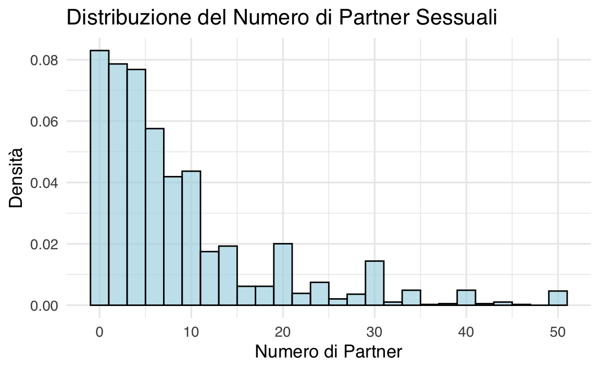
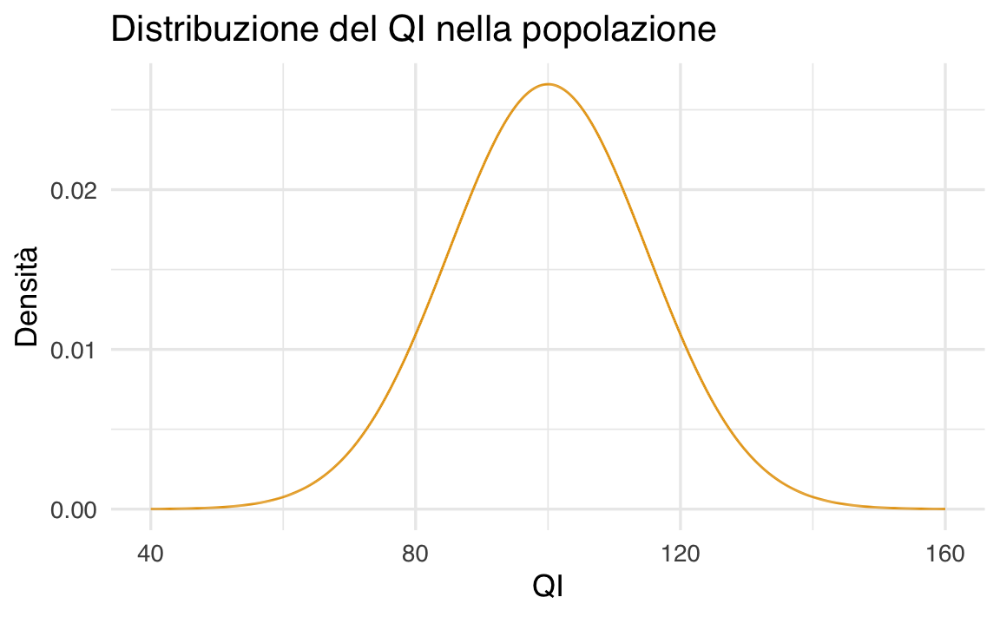
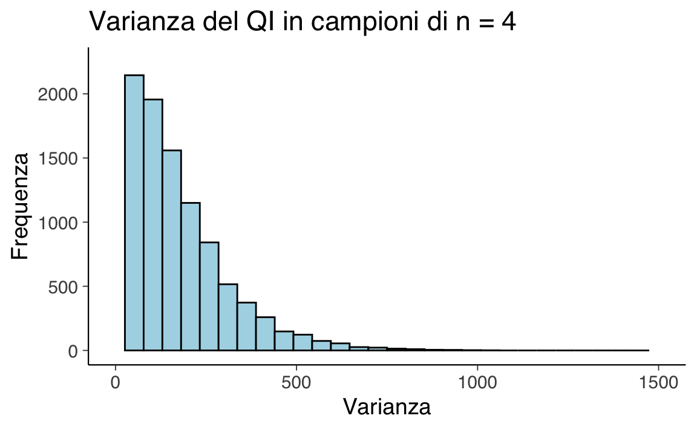

here::here("code", "_common.R") |>
source()
# Load packages
if (!requireNamespace("pacman")) install.packages("pacman")
pacman::p_load(tidyr, viridis, vcd)12 Indicatori di tendenza centrale e variabilità
Prerequisiti
Concetti e competenze chiave
- Calcolare e interpretare i principali indici di tendenza centrale e di variabilità.
Preparazione del Notebook
12.1 Introduzione
La visualizzazione grafica dei dati rappresenta il pilastro fondamentale di ogni analisi quantitativa. Grazie alle rappresentazioni grafiche adeguate, è possibile individuare importanti caratteristiche di una distribuzione, quali la simmetria o l’asimmetria, nonché la presenza di una o più mode. Successivamente, al fine di descrivere sinteticamente le principali caratteristiche dei dati, si rende necessario l’utilizzo di specifici indici numerici. In questo capitolo, verranno presentati i principali indicatori della statistica descrittiva.
12.2 Indici di tendenza centrale
Gli indici di tendenza centrale sono misure statistiche che cercano di rappresentare un valore tipico o centrale all’interno di un insieme di dati. Sono utilizzati per ottenere una comprensione immediata della distribuzione dei dati senza dover analizzare l’intero insieme. Gli indici di tendenza centrale sono fondamentali nell’analisi statistica, in quanto forniscono una sintesi semplice e comprensibile delle caratteristiche principali di un insieme di dati. I principali indici di tendenza centrale sono:
- Media: La media è la somma di tutti i valori divisa per il numero totale di valori. È spesso utilizzata come misura generale di tendenza centrale, ma è sensibile agli estremi (valori molto alti o molto bassi).
- Mediana: La mediana è il valore che divide l’insieme di dati in due parti uguali. A differenza della media, non è influenzata da valori estremi ed è quindi più robusta in presenza di outlier.
- Moda: La moda è il valore che appare più frequentemente in un insieme di dati. In alcuni casi, può non essere presente o esserci più di una moda.
La scelta dell’indice di tendenza centrale appropriato dipende dalla natura dei dati e dall’obiettivo dell’analisi. Ad esempio, la mediana potrebbe essere preferita alla media se l’insieme di dati contiene valori anomali che potrebbero distorcere la rappresentazione centrale. La conoscenza e l’applicazione corretta di questi indici possono fornire una preziosa intuizione sulle caratteristiche centrali di una distribuzione di dati.
12.2.1 Media
La media aritmetica di un insieme di valori rappresenta il punto centrale o il baricentro della distribuzione dei dati. È calcolata come la somma di tutti i valori divisa per il numero totale di valori, ed è espressa dalla formula:
\[ \bar{x}=\frac{1}{n}\sum_{i=1}^n x_i, \tag{12.1}\]
dove \(x_i\) rappresenta i valori nell’insieme, \(n\) è il numero totale di valori, e \(\sum\) indica la sommatoria.
12.2.1.1 Proprietà della media
Una proprietà fondamentale della media è che la somma degli scarti di ciascun valore dalla media è zero:
\[ \sum_{i=1}^n (x_i - \bar{x}) = 0.\notag \tag{12.2}\]
Infatti,
\[ \begin{aligned} \sum_{i=1}^n (x_i - \bar{x}) &= \sum_i x_i - \sum_i \bar{x}\notag\\ &= \sum_i x_i - n \bar{x}\notag\\ &= \sum_i x_i - \sum_i x_i = 0.\notag \end{aligned} \]
Questa proprietà implica che i dati sono equamente distribuiti intorno alla media.
12.2.1.2 La media come centro di gravità dell’istogramma
La media aritmetica può essere interpretata come il centro di gravità o il punto di equilibrio della distribuzione dei dati. In termini fisici, il centro di gravità è il punto in cui la massa di un sistema è equilibrata o concentrata.
In termini statistici, possiamo considerare la media come il punto in cui la distribuzione dei dati è in equilibrio. Ogni valore dell’insieme di dati può essere visto come un punto materiale con una massa proporzionale al suo valore. Se immaginiamo questi punti disposti su una linea, con valori più grandi a destra e più piccoli a sinistra, la media corrisponderà esattamente al punto in cui la distribuzione sarebbe in equilibrio.
12.2.1.3 Principio dei minimi quadrati
La posizione della media minimizza la somma delle distanze quadrate dai dati, un principio noto come “metodo dei minimi quadrati”. Matematicamente, questo si traduce nel fatto che la somma dei quadrati degli scarti tra ciascun valore e la media è minima. Questo principio è alla base dell’analisi statistica dei modelli di regressione e conferma l’interpretazione della media come centro di gravità dell’istogramma.
12.2.1.4 Calcolo della media con R
Per calcolare la media di un piccolo numero di valori in Python, possiamo utilizzare la somma di questi valori e dividerla per il numero totale di elementi. Consideriamo ad esempio i valori 12, 44, 21, 62, 24:
(12 + 44 + 21 + 62 + 24) / 5
#> [1] 32.6ovvero
12.2.1.5 Le proporzioni sono medie
Se una collezione consiste solo di uni e zeri, allora la somma della collezione è il numero di uni in essa, e la media della collezione è la proporzione di uni.
È possibile sostituire 1 con il valore booleano True e 0 con False:
12.2.1.6 Limiti della media aritmetica
La media aritmetica, tuttavia, ha alcune limitazioni: non sempre è l’indice più adeguato per descrivere accuratamente la tendenza centrale della distribuzione, specialmente quando si verificano asimmetrie o valori anomali (outlier). In queste situazioni, è più indicato utilizzare la mediana o la media spuntata (come spiegheremo successivamente).
12.2.1.7 Medie per gruppi
Molto spesso però i nostri dati sono contenuti in file e inserire i dati manualmente non è fattibile. Per fare un esempio, considereremo i dati del Progetto STAR, contenuti nel file STAR.csv, che rappresentano un’importante indagine sulle prestazioni degli studenti in relazione alla dimensione delle classi. Negli anni ’80, i legislatori del Tennessee considerarono la possibilità di ridurre le dimensioni delle classi per migliorare il rendimento degli studenti. Al fine di prendere decisioni informate, commissionarono lo studio multimilionario “Progetto Student-Teacher Achievement Ratio” (Project STAR). Lo studio coinvolgeva bambini della scuola materna assegnati casualmente a classi piccole, con 13-17 studenti, o classi di dimensioni regolari, con 22-25 studenti, fino alla fine della terza elementare. I ricercatori hanno seguito il progresso degli studenti nel tempo, concentrandosi su variabili di risultato, come i punteggi dei test standardizzati di lettura (reading) e matematica (math) alla terza elementare, oltre ai tassi di diploma di scuola superiore (graduated, con valore 1 per sì e 0 per no).
Poniamoci il problema di calcolare la media dei punteggi math calcolata separatamente per i due gruppi di studenti: coloro che hanno completato la scuola superiore e coloro che non l’hanno completata.
Procediamo all’importazione dei dati per iniziare l’analisi.
Esaminiamo la numerosità di ciascun gruppo.
df |>
group_by(graduated) |>
summarize(count = n())
#> # A tibble: 2 × 2
#> graduated count
#> <int> <int>
#> 1 0 166
#> 2 1 1108Ora procediamo al calcolo delle medie dei punteggi math all’interno dei due gruppi. Per rendere la risposta più concisa, useremo la funzione round() per stampare solo 2 valori decimali.
12.2.2 Media spuntata
La media spuntata, indicata come \(\bar{x}_t\) o trimmed mean, è un metodo di calcolo della media che prevede l’eliminazione di una determinata percentuale di dati estremi prima di effettuare la media aritmetica. Solitamente, viene eliminato il 10% dei dati, ovvero il 5% all’inizio e alla fine della distribuzione. Per ottenere la media spuntata, i dati vengono ordinati in modo crescente, \(x_1 \leq x_2 \leq x_3 \leq \dots \leq x_n\), e quindi viene eliminato il primo 5% e l’ultimo 5% dei dati nella sequenza ordinata. Infine, la media spuntata è calcolata come la media aritmetica dei dati rimanenti. Questo approccio è utile quando ci sono valori anomali o quando la distribuzione è asimmetrica e la media aritmetica non rappresenta adeguatamente la tendenza centrale dei dati.
A titolo di esempio, procediamo al calcolo della media spuntata dei valori math per i due gruppi definiti dalla variabile graduated, escludendo il 10% dei valori più estremi.
glimpse(df)
#> Rows: 1,274
#> Columns: 4
#> $ classtype <chr> "small", "regular", "regular", "small", "small", "regular…
#> $ reading <int> 578, 612, 583, 661, 614, 610, 595, 665, 616, 624, 593, 59…
#> $ math <int> 610, 612, 606, 648, 636, 603, 610, 631, 636, 626, 601, 56…
#> $ graduated <int> 1, 1, 1, 1, 1, 0, 1, 1, 1, 1, 0, 0, 1, 1, 0, 1, 1, 1, 1, …not_graduated <- df[df$graduated == 0, "math"]
mean(not_graduated, trim = 0.10, na.rm = TRUE)
#> [1] 605.6493not_graduated <- df[df$graduated == 1, "math"]
mean(not_graduated, trim = 0.10, na.rm = TRUE)
#> [1] 634.440312.2.3 Quantili
Il quantile non interpolato di ordine \(p\) \((0 < p < 1)\) rappresenta il valore che divide la distribuzione dei dati in modo tale che una frazione \(p\) dei dati si trovi al di sotto di esso.
La formula per calcolare il quantile non interpolato è la seguente:
\[ q_p = x_{(k)}, \]
dove \(x_{(k)}\) è l’elemento \(k\)-esimo nell’insieme di dati ordinato in modo crescente, e \(k\) è calcolato come:
\[ k = \lceil p \cdot n \rceil, \]
dove \(n\) è il numero totale di dati nel campione, e \(\lceil \cdot \rceil\) rappresenta la funzione di arrotondamento all’intero successivo. In questa definizione, il quantile non interpolato corrisponde al valore effettivo nell’insieme di dati, senza effettuare alcuna interpolazione tra i valori circostanti.
Ad esempio, consideriamo il seguente insieme di dati: \(\{ 15, 20, 23, 25, 28, 30, 35, 40, 45, 50 \}\). Supponiamo di voler calcolare il quantile non interpolato di ordine \(p = 0.3\) (cioè il 30° percentile).
Ordiniamo i dati in modo crescente: \(\{ 15, 20, 23, 25, 28, 30, 35, 40, 45, 50 \}.\) Calcoliamo \(k\) utilizzando la formula \(k = \lceil p \cdot n \rceil\), dove \(n\) è il numero totale di dati nel campione. Nel nostro caso, \(n = 10\) e \(p = 0.3\):
\[ k = \lceil 0.3 \cdot 10 \rceil = \lceil 3 \rceil = 3. \]
Il quantile non interpolato corrisponde al valore \(x_{(k)}\), ovvero l’elemento \(k\)-esimo nell’insieme ordinato: \(q_{0.3} = x_{(3)} = 23.\)
Oltre al quantile non interpolato, esiste anche il concetto di quantile interpolato. A differenza del quantile non interpolato, il quantile interpolato può essere calcolato anche per percentili che non corrispondono esattamente a valori presenti nell’insieme di dati. Per ottenere il valore del quantile interpolato, viene utilizzato un procedimento di interpolazione lineare tra i valori adiacenti. In genere, il calcolo del quantile interpolato viene eseguito mediante l’uso di software dedicati.
Ora, procediamo al calcolo dei quantili di ordine 0.10 e 0.90 per i valori math all’interno dei due gruppi. I quantili sono dei valori che dividono la distribuzione dei dati in parti specifiche. Ad esempio, il quantile di ordine 0.10 corrisponde al valore al di sotto del quale si trova il 10% dei dati, mentre il quantile di ordine 0.90 rappresenta il valore al di sotto del quale si trova il 90% dei dati.
Calcoliamo i quantili di ordine 0.1 e 0.9 della distribuzione dei punteggi math nei due gruppi definiti dalla variabile graduated.
12.2.4 Moda e mediana
In precedenza abbiamo già incontrato altri due popolari indici di tendenza centrale: la moda (Mo), che rappresenta il valore centrale della classe con la frequenza massima (in alcune distribuzioni può esserci più di una moda, rendendola multimodale e facendo perdere a questo indice il suo significato di indicatore di tendenza centrale); e la mediana (\(\tilde{x}\)), che rappresenta il valore corrispondente al quantile di ordine 0.5 della distribuzione.
12.2.5 Quando usare media, moda, mediana
La moda può essere utilizzata per dati a livello nominale o ordinale ed è l’unica tra le tre statistiche che può essere calcolata in questi casi.
La media, d’altra parte, è una buona misura di tendenza centrale solo se la distribuzione dei dati è simmetrica, ossia se i valori sono distribuiti uniformemente a sinistra e a destra della media. Tuttavia, se ci sono valori anomali o se la distribuzione è asimmetrica, la media può essere influenzata in modo significativo e, pertanto, potrebbe non essere la scelta migliore come misura di tendenza centrale.
In queste situazioni, la mediana può fornire una misura migliore di tendenza centrale rispetto alla media poiché è meno influenzata dai valori anomali e si basa esclusivamente sul valore centrale dell’insieme di dati. Di conseguenza, la scelta tra media e mediana dipende dal tipo di distribuzione dei dati e dagli obiettivi dell’analisi.
12.3 Indici di dispersione
Le misure di posizione descritte in precedenza, come le medie e gli indici di posizione, offrono una sintesi dei dati mettendo in evidenza la tendenza centrale delle osservazioni. Tuttavia, trascurano un aspetto importante della distribuzione dei dati: la variabilità dei valori numerici della variabile statistica. Pertanto, è essenziale completare la descrizione della distribuzione di una variabile statistica utilizzando anche indicatori che valutino la dispersione delle unità statistiche. In questo modo, otterremo una visione più completa e approfondita delle caratteristiche del campione analizzato.
12.3.1 Indici basati sull’ordinamento dei dati
Per valutare la variabilità dei dati, è possibile utilizzare indici basati sull’ordinamento dei dati. L’indice più semplice è l’intervallo di variazione, che corrisponde alla differenza tra il valore massimo e il valore minimo di una distribuzione di dati. Tuttavia, questo indice ha il limite di essere calcolato basandosi solo su due valori della distribuzione, e non tiene conto di tutte le informazioni disponibili. Inoltre, l’intervallo di variazione può essere fortemente influenzato dalla presenza di valori anomali.
Un altro indice basato sull’ordinamento dei dati è la differenza interquartile, già incontrata in precedenza. Anche se questo indice utilizza più informazioni rispetto all’intervallo di variazione, presenta comunque il limite di essere calcolato basandosi solo su due valori della distribuzione, ossia il primo quartile \(Q_1\) e il terzo quartile \(Q_3\).
Per valutare la variabilità in modo più completo, è necessario utilizzare altri indici di variabilità che tengano conto di tutti i dati disponibili. In questo modo, si otterrà una valutazione più accurata della dispersione dei valori nella distribuzione e si potranno individuare eventuali pattern o tendenze nascoste.
12.3.2 Varianza
Date le limitazioni delle statistiche descritte in precedenza, è più comune utilizzare una misura di variabilità che tenga conto della dispersione dei dati rispetto a un indice di tendenza centrale. La varianza è la misura di variabilità più utilizzata per valutare la variabilità di una variabile statistica. Essa è definita come la media dei quadrati degli scarti \(x_i - \bar{x}\) tra ogni valore e la media della distribuzione, come segue:
\[ \begin{equation} S^2 = \frac{1}{n} \sum_{i=1}^n (x_i - \bar{x})^2. \end{equation} \tag{12.3}\]
La varianza è una misura di dispersione più completa rispetto a quelle descritte in precedenza. Tuttavia, è appropriata solo nel caso di distribuzioni simmetriche ed è fortemente influenzata dai valori anomali, come altre misure di dispersione. Inoltre, la varianza è espressa in un’unità di misura che è il quadrato dell’unità di misura dei dati originali, pertanto, potrebbe non essere facilmente interpretata in modo intuitivo.
Calcoliamo la varianza dei valori math per i dati del progetto STAR. Applicando l’equazione della varianza, otteniamo:
Più semplicemente, possiamo usare la funzione var():
12.3.2.1 Stima della varianza della popolazione
Si noti il denominatore della formula della varianza. Nell’Equazione 12.3, ho utilizzato \(n\) come denominatore (l’ampiezza campionaria, ovvero il numero di osservazioni nel campione). In questo modo, otteniamo la varianza come statistica descrittiva del campione. Tuttavia, è possibile utilizzare \(n-1\) come denominatore alternativo:
\[ \begin{equation} s^2 = \frac{1}{n-1} \sum_{i=1}^n (x_i - \bar{x})^2 \end{equation} \tag{12.4}\]
In questo secondo caso, otteniamo la varianza come stimatore della varianza della popolazione. Si può dimostrare che l’Equazione 12.4 fornisce una stima corretta (ovvero, non distorta) della varianza della popolazione da cui abbiamo ottenuto il campione, mentre l’Equazione 12.3 fornisce (in media) una stima troppo piccola della varianza della popolazione. Si presti attenzione alla notazione: \(S^2\) rappresenta la varianza come statistica descrittiva, mentre \(s^2\) rappresenta la varianza come stimatore.
Per illustrare questo punto, svolgiamo una simulazione. Consideriamo la distribuzione dei punteggi del quoziente di intelligenza (QI). I valori del QI seguono una particolare distribuzione chiamata distribuzione normale, con media 100 e deviazione standard 15. La forma di questa distribuzione è illustrata nella figura seguente.
# Define parameters
x <- seq(100 - 4 * 15, 100 + 4 * 15, by = 0.001)
mu <- 100
sigma <- 15
# Compute the PDF
pdf <- dnorm(x, mean = mu, sd = sigma)
# Plot using ggplot2
data <- data.frame(x = x, pdf = pdf)
ggplot(data, aes(x = x, y = pdf)) +
geom_line() +
labs(x = "x", y = "f(x)") 
Supponiamo di estrarre un campione casuale di 4 osservazioni dalla popolazione del quoziente di intelligenza – in altre parole, supponiamo di misurare il quoziente di intelligenza di 4 persone prese a caso dalla popolazione.
Calcoliamo la varianza usando \(n\) al denominatore. Si noti che la vera varianza del quoziente di intelligenza è \(15^2\) = 225.
var(x)
#> [1] 196.9395Consideriamo ora 10 campioni casuali del QI, ciascuno di ampiezza 4.
Il primo campione è
random_samples[1]
#> [[1]]
#> [1] 91.59287 96.54734 123.38062 101.05763Il decimo campione è
random_samples[10]
#> [[1]]
#> [1] 108.30876 99.07132 95.41056 94.29293Stampiamo i valori di tutti i 10 campioni.
rs <- do.call(rbind, random_samples)
rs
#> [,1] [,2] [,3] [,4]
#> [1,] 91.59287 96.54734 123.38062 101.05763
#> [2,] 101.93932 125.72597 106.91374 81.02408
#> [3,] 89.69721 93.31507 118.36123 105.39721
#> [4,] 106.01157 101.66024 91.66238 126.80370
#> [5,] 107.46776 70.50074 110.52034 92.90813
#> [6,] 83.98264 96.73038 84.60993 89.06663
#> [7,] 90.62441 74.69960 112.56681 102.30060
#> [8,] 82.92795 118.80722 106.39696 95.57393
#> [9,] 113.42688 113.17200 112.32372 110.32960
#> [10,] 108.30876 99.07132 95.41056 94.29293Per ciascun campione (ovvero, per ciascuna riga della matrice precedente), calcoliamo la varianza usando la formula con \(n\) al denominatore. Otteniamo così 10 stime della varianza della popolazione del QI.
Notiamo due cose:
- le stime sono molto diverse tra loro; questo fenomeno è noto con il nome di variabilità campionaria;
- in media le stime sono troppo piccole.
Per aumentare la sicurezza riguardo al secondo punto menzionato in precedenza, ripeteremo la simulazione utilizzando un numero di iterazioni maggiore.
mu <- 100
sigma <- 15
size <- 4
niter <- 10000
random_samples <- list()
set.seed(123) # Replace 123 with your desired seed for reproducibility
for (i in 1:niter) {
one_sample <- rnorm(size, mean = mu, sd = sigma)
random_samples[[i]] <- one_sample
}
rs <- do.call(rbind, random_samples)
x_var <- apply(rs, 1, var) * (size - 1) / size # Adjust for population variance (ddof = 0)Esaminiamo la distribuzione dei valori ottenuti.
# Create a data frame for plotting
data <- data.frame(x_var = x_var)
# Plot the histogram using ggplot2
ggplot(data, aes(x = x_var)) +
geom_histogram(bins = 10, alpha = 0.5, fill = "blue") +
labs(x = "Varianza", y = "Frequenza", title = "Varianza del QI in campioni di n = 4")
La stima più verosimile della varianza del QI è dato dalla media di questa distribuzione.
mean(x_var)
#> [1] 168.9337Si noti che il nostro spospetto è stato confermato: il valore medio della stima della varianza ottenuta con l’Equazione 12.3 è troppo piccolo rispetto al valore corretto di \(15^2 = 225\).
Ripetiamo ora la simulazione usando la formula della varianza con \(n-1\) al denominatore.
mu <- 100
sigma <- 15
size <- 4
niter <- 10000
random_samples <- list()
set.seed(123) # Replace 123 with your desired seed for reproducibility
for (i in 1:niter) {
one_sample <- rnorm(size, mean = mu, sd = sigma)
random_samples[[i]] <- one_sample
}
rs <- do.call(rbind, random_samples)
x_var <- apply(rs, 1, var) # ddof = 1 is default for var in R
mean(x_var)
#> [1] 225.2449Nel secondo caso, se utilizziamo \(n-1\) come denominatore per calcolare la stima della varianza, il valore atteso di questa stima è molto vicino al valore corretto di 225. Se il numero di campioni fosse infinito, i due valori sarebbero identici.
In conclusione, le due formule della varianza hanno scopi diversi. La formula della varianza con \(n\) al denominatore viene utilizzata come statistica descrittiva per descrivere la variabilità di un particolare campione di osservazioni. D’altro canto, la formula della varianza con \(n-1\) al denominatore viene utilizzata come stimatore per ottenere la migliore stima della varianza della popolazione da cui quel campione è stato estratto.
12.3.3 Deviazione standard
Per interpretare la varianza in modo più intuitivo, si può calcolare la deviazione standard (o scarto quadratico medio o scarto tipo) prendendo la radice quadrata della varianza. La deviazione standard è espressa nell’unità di misura originaria dei dati, a differenza della varianza che è espressa nel quadrato dell’unità di misura dei dati. La deviazione standard fornisce una misura della dispersione dei dati attorno alla media, rendendo più facile la comprensione della variabilità dei dati.
La deviazione standard (o scarto quadratico medio, o scarto tipo) è definita come:
\[ s^2 = \sqrt{(n-1)^{-1} \sum_{i=1}^n (x_i - \bar{x})^2}. \tag{12.5}\]
Quando tutte le osservazioni sono uguali, \(s = 0\), altrimenti \(s > 0\).
Il termine standard deviation è stato introdotto in statistica da Pearson nel 1894 assieme alla lettera greca \(\sigma\) che lo rappresenta. Il termine italiano “deviazione standard” ne è la traduzione più utilizzata nel linguaggio comune; il termine dell’Ente Nazionale Italiano di Unificazione è tuttavia “scarto tipo”, definito come la radice quadrata positiva della varianza.
La deviazione standard \(s\) dovrebbe essere utilizzata solo quando la media è una misura appropriata per descrivere il centro della distribuzione, ad esempio nel caso di distribuzioni simmetriche. Tuttavia, è importante tener conto che, come la media \(\bar{x}\), anche la deviazione standard è fortemente influenzata dalla presenza di dati anomali, ovvero pochi valori che si discostano notevolmente dalla media rispetto agli altri dati della distribuzione. In presenza di dati anomali, la deviazione standard può risultare ingannevole e non rappresentare accuratamente la variabilità complessiva della distribuzione. Pertanto, è fondamentale considerare attentamente il contesto e le caratteristiche dei dati prima di utilizzare la deviazione standard come misura di dispersione. In alcune situazioni, potrebbe essere più appropriato ricorrere a misure di dispersione robuste o ad altre statistiche descrittive per caratterizzare la variabilità dei dati in modo più accurato e affidabile.
Per fare un esempio, calcoliamo la deviazione standard per i valori math del campione di dati del progetto STAR. Applicando l’Equazione 12.5, per tutto il campione abbiamo
sd(df$math)
#> [1] 38.83834Per ciascun gruppo, abbiamo:
df |>
group_by(graduated) |>
summarise(std_math = sd(math, na.rm = TRUE))
#> # A tibble: 2 × 2
#> graduated std_math
#> <int> <dbl>
#> 1 0 34.1
#> 2 1 38.112.3.3.1 Interpretazione
La deviazione standard può essere interpretata in modo semplice: essa rappresenta la dispersione dei dati rispetto alla media aritmetica. È simile allo scarto semplice medio campionario, cioè alla media aritmetica dei valori assoluti degli scarti tra ciascuna osservazione e la media, anche se non è identica. La deviazione standard ci fornisce un’indicazione di quanto, in media, le singole osservazioni si discostino dal centro della distribuzione.
Per verificare l’interpretazione della deviazione standard, utilizziamo i valori math del campione di dati del progetto STAR.
sd(df$math)
#> [1] 38.83834La deviazione standard calcolata per questi dati è \(\approx 38.8\). Questo valore ci indica che, in media, ogni osservazione si discosta di circa 38.8 punti dalla media aritmetica dei punteggi math. Maggiore è il valore della deviazione standard, maggiore è la dispersione dei dati attorno alla media, mentre un valore più piccolo indica che i dati sono più concentrati vicino alla media. La deviazione standard ci offre quindi una misura quantitativa della variabilità dei dati nella distribuzione.
Per questi dati, lo scarto semplice medio campionario è
Si noti che i due valori sono simili, ma non identici.
12.3.4 Deviazione mediana assoluta
Una misura robusta della dispersione statistica di un campione è la deviazione mediana assoluta (Median Absolute Deviation, MAD) definita come la mediana del valore assoluto delle deviazioni dei dati dalla mediana. Matematicamente, la formula per calcolare la MAD è:
\[ \text{MAD} = \text{median} \left( |X_i - \text{median}(X)| \right) \tag{12.6}\]
La deviazione mediana assoluta è particolarmente utile quando si affrontano distribuzioni con presenza di dati anomali o asimmetrie, poiché è meno influenzata da questi valori estremi rispetto alla deviazione standard.
Quando i dati seguono una distribuzione gaussiana (normale), esiste una relazione specifica tra MAD e la deviazione standard (si veda il Capitolo {ref}cont-rv-distr-notebook). In una distribuzione normale, la MAD è proporzionale alla deviazione standard. La costante di proporzionalità dipende dalla forma esatta della distribuzione normale, ma in generale, la relazione è data da:
\[ \sigma \approx k \times \text{MAD}, \]
dove:
- \(\sigma\) è la deviazione standard.
- MAD è la Mediana della Deviazione Assoluta.
- \(k\) è una costante che, per una distribuzione normale, è tipicamente presa come circa 1.4826.
Questa costante di 1.4826 è derivata dal fatto che, in una distribuzione normale, circa il 50% dei valori si trova entro 0.6745 deviazioni standard dalla media. Quindi, per convertire la MAD (basata sulla mediana) nella deviazione standard (basata sulla media), si usa il reciproco di 0.6745, che è approssimativamente 1.4826.
La formula completa per convertire la MAD in una stima della deviazione standard in una distribuzione normale è:
\[ \sigma \approx 1.4826 \times \text{MAD} \]
Questa relazione è utile per stimare la deviazione standard in modo più robusto, specialmente quando si sospetta la presenza di outlier o si ha a che fare con campioni piccoli. Di conseguenza, molti software restituiscono il valore MAD moltiplicato per questa costante per fornire un’indicazione più intuitiva della variabilità dei dati. Tuttavia, è importante notare che questa relazione si mantiene accurata solo per le distribuzioni che sono effettivamente normali. In presenza di distribuzioni fortemente asimmetriche o con elevati outlier, la deviazione standard e la MAD possono fornire indicazioni molto diverse sulla variabilità dei dati.
Per verificare questo principio, calcoliamo la deviazione mediana assoluta dei valori math del campione di dati del progetto STAR.
In questo caso, la MAD per i punteggi di matematica è simile alla deviazione standard.
sd(df$math)
#> [1] 38.83834Infatti, la distribuzione dei punteggi math è approssimativamente gaussiana.
ggplot(df, aes(x = math)) +
geom_histogram(bins = 10, alpha = 0.5, fill = "blue") +
labs(x = "math", y = "Frequenza", title = "Distribuzione dei Punteggi di Matematica")
Verifichiamo nuovamente il principio usando un campione di dati estratto da una popolazione normale. Usiamo, ad esempio, la distribuzione \(\mathcal{N}(100, 15)\):
12.3.5 Quando usare la deviazione standard e MAD
La deviazione standard e la MAD sono entrambe misure di dispersione che forniscono informazioni su quanto i dati in un insieme si discostano dalla tendenza centrale. Tuttavia, ci sono alcune differenze tra le due misure e situazioni in cui può essere più appropriato utilizzare una rispetto all’altra.
Deviazione standard: Questa misura è particolarmente utile per descrivere la dispersione dei dati in una distribuzione normale. La deviazione standard è una scelta appropriata se si vuole sapere quanto i dati sono distribuiti intorno alla media, o se si vuole confrontare la dispersione di due o più set di dati. Tuttavia, la deviazione standard è fortemente influenzata dalla presenza di dati anomali, e questo può rappresentare una limitazione in casi in cui sono presenti valori estremi nell’insieme di dati.
Deviazione mediana assoluta (MAD): La MAD è meno sensibile ai valori anomali rispetto alla deviazione standard, il che la rende una scelta migliore quando ci sono valori anomali nell’insieme di dati. Inoltre, la MAD può essere una buona scelta quando si lavora con dati non normalmente distribuiti, poiché non assume una distribuzione specifica dei dati. La MAD è calcolata utilizzando la mediana e i valori assoluti delle deviazioni dei dati dalla mediana, il che la rende una misura robusta di dispersione.
In sintesi, se si sta lavorando con dati normalmente distribuiti, la deviazione standard è la misura di dispersione più appropriata. Se si lavora con dati non normalmente distribuiti o si hanno valori anomali nell’insieme di dati, la MAD può essere una scelta migliore. In ogni caso, la scelta tra le due misure dipende dal tipo di dati che si sta analizzando e dall’obiettivo dell’analisi.
12.3.6 Indici di variabilità relativi
A volte può essere necessario confrontare la variabilità di grandezze incommensurabili, ovvero di caratteri misurati con differenti unità di misura. In queste situazioni, le misure di variabilità descritte in precedenza diventano inadeguate poiché dipendono dall’unità di misura utilizzata. Per superare questo problema, si ricorre a specifici numeri adimensionali chiamati indici relativi di variabilità.
Il più importante di questi indici è il coefficiente di variazione (\(C_v\)), definito come il rapporto tra la deviazione standard (\(\sigma\)) e la media dei dati (\(\bar{x}\)):
\[ C_v = \frac{\sigma}{\bar{x}}. \tag{12.7}\]
Il coefficiente di variazione è un numero puro e permette di confrontare la variabilità di distribuzioni con unità di misura diverse.
Un altro indice relativo di variabilità è la differenza interquartile rapportata a uno dei tre quartili (primo quartile, terzo quartile o mediana). Questo indice è definito come:
\[ \frac{x_{0.75} - x_{0.25}}{x_{0.25}}, \qquad \frac{x_{0.75} - x_{0.25}}{x_{0.75}}, \qquad \frac{x_{0.75} - x_{0.25}}{x_{0.50}}. \]
Questi indici relativi di variabilità forniscono una misura adimensionale della dispersione dei dati, rendendo possibile il confronto tra grandezze con diverse unità di misura e facilitando l’analisi delle differenze di variabilità tra i dati.
12.4 La fallacia ergodica
Sebbene il concetto di “media” possa sembrare chiaro, ciò non implica che il suo utilizzo non presenti delle problematiche nell’ambito della pratica psicologica. Un aspetto su cui vale la pena soffermarsi è ciò che viene definito “fallacia ergodica”.
Il concetto di “fallacia ergodica” (Speelman et al., 2024) si riferisce all’errore compiuto dai ricercatori quando assumono che le caratteristiche medie di un gruppo di individui possano essere applicate a ciascun individuo all’interno di quel gruppo, senza considerare le differenze individuali o le variazioni nel tempo. Questa fallacia emerge dalla pratica comune nella ricerca psicologica di raccogliere dati aggregati da gruppi di persone per stimare parametri della popolazione, al fine di confrontare comportamenti in condizioni diverse o esplorare associazioni tra diverse misurazioni della stessa persona.
Il problema di questo approccio è che l’uso dei risultati basati sul gruppo per caratterizzare le caratteristiche degli individui o per estrapolare a persone simili a quelle del gruppo è ingiustificato, poiché le medie di gruppo possono fornire informazioni solo sui risultati collettivi, come la performance media del gruppo, e non consentono di fare affermazioni accurate sugli individui che compongono quel gruppo. La fallacia ergodica si basa sull’assunzione che per utilizzare legittimamente una statistica aggregata (ad esempio, la media) derivata da un gruppo per descrivere un individuo di quel gruppo, due condizioni devono essere soddisfatte: gli individui devono essere così simili da essere praticamente interscambiabili, e le caratteristiche degli individui devono essere temporalmente stabili.
Tuttavia, i fenomeni e i processi psicologici di interesse per i ricercatori sono per natura non uniformi tra gli individui e variabili nel tempo, sia all’interno degli individui che tra di loro. Di conseguenza, i risultati ottenuti dalla media di misure di comportamenti, cognizioni o stati emotivi di più individui non descrivono accuratamente nessuno di quegli individui in un dato momento, né possono tenere conto dei cambiamenti in quelle variabili per un individuo nel tempo.
Speelman et al. (2024) osservano che la stragrande maggioranza degli articoli che hanno analizzato include conclusioni nelle sezioni degli Abstract e/o delle Discussioni che implicano che i risultati trovati con dati aggregati di gruppo si applichino anche agli individui in quei gruppi e/o si applichino agli individui nella popolazione. Questa pratica riflette la fallacia ergodica, che consiste nell’assumere che i campioni siano sistemi ergodici quando non lo sono.
12.5 Riflessioni Conclusive
Le statistiche descrittive ci permettono di ottenere indicatori sintetici che riassumono i dati di una popolazione o di un campione estratto da essa. Questi indicatori includono misure di tendenza centrale, come la media, la mediana e la moda, che ci forniscono informazioni sulla posizione centrale dei dati rispetto alla distribuzione. Inoltre, ci sono gli indici di dispersione, come la deviazione standard e la varianza, che ci indicano quanto i dati si disperdono attorno alla tendenza centrale. Questi indici ci aiutano a comprendere quanto i valori si discostano dalla media, e quindi ci forniscono un’idea della variabilità dei dati. In conclusione, le statistiche descrittive ci offrono un quadro sintetico delle caratteristiche principali dei dati, consentendoci di comprendere meglio la loro distribuzione e variabilità.
Informazioni sull’Ambiente di Sviluppo
sessionInfo()
#> R version 4.4.2 (2024-10-31)
#> Platform: aarch64-apple-darwin20
#> Running under: macOS Sequoia 15.1.1
#>
#> Matrix products: default
#> BLAS: /Library/Frameworks/R.framework/Versions/4.4-arm64/Resources/lib/libRblas.0.dylib
#> LAPACK: /Library/Frameworks/R.framework/Versions/4.4-arm64/Resources/lib/libRlapack.dylib; LAPACK version 3.12.0
#>
#> locale:
#> [1] C/UTF-8/C/C/C/C
#>
#> time zone: Europe/Zagreb
#> tzcode source: internal
#>
#> attached base packages:
#> [1] grid stats graphics grDevices utils datasets methods
#> [8] base
#>
#> other attached packages:
#> [1] vcd_1.4-13 MASS_7.3-61 viridis_0.6.5 viridisLite_0.4.2
#> [5] ggpubr_0.6.0 ggExtra_0.10.1 gridExtra_2.3 patchwork_1.3.0
#> [9] bayesplot_1.11.1 psych_2.4.6.26 scales_1.3.0 markdown_1.13
#> [13] knitr_1.49 lubridate_1.9.3 forcats_1.0.0 stringr_1.5.1
#> [17] dplyr_1.1.4 purrr_1.0.2 readr_2.1.5 tidyr_1.3.1
#> [21] tibble_3.2.1 ggplot2_3.5.1 tidyverse_2.0.0 rio_1.2.3
#> [25] here_1.0.1
#>
#> loaded via a namespace (and not attached):
#> [1] gtable_0.3.6 xfun_0.49 htmlwidgets_1.6.4 rstatix_0.7.2
#> [5] lattice_0.22-6 tzdb_0.4.0 vctrs_0.6.5 tools_4.4.2
#> [9] generics_0.1.3 parallel_4.4.2 fansi_1.0.6 pacman_0.5.1
#> [13] R.oo_1.27.0 pkgconfig_2.0.3 data.table_1.16.2 lifecycle_1.0.4
#> [17] compiler_4.4.2 farver_2.1.2 munsell_0.5.1 mnormt_2.1.1
#> [21] carData_3.0-5 httpuv_1.6.15 htmltools_0.5.8.1 yaml_2.3.10
#> [25] Formula_1.2-5 car_3.1-3 pillar_1.9.0 later_1.4.0
#> [29] R.utils_2.12.3 abind_1.4-8 nlme_3.1-166 mime_0.12
#> [33] tidyselect_1.2.1 digest_0.6.37 stringi_1.8.4 labeling_0.4.3
#> [37] rprojroot_2.0.4 fastmap_1.2.0 colorspace_2.1-1 cli_3.6.3
#> [41] magrittr_2.0.3 utf8_1.2.4 broom_1.0.7 withr_3.0.2
#> [45] backports_1.5.0 promises_1.3.1 timechange_0.3.0 rmarkdown_2.29
#> [49] ggsignif_0.6.4 R.methodsS3_1.8.2 zoo_1.8-12 hms_1.1.3
#> [53] shiny_1.9.1 evaluate_1.0.1 lmtest_0.9-40 miniUI_0.1.1.1
#> [57] rlang_1.1.4 Rcpp_1.0.13-1 xtable_1.8-4 glue_1.8.0
#> [61] jsonlite_1.8.9 R6_2.5.1Bibliografia
Speelman, C. P., Parker, L., Rapley, B. J., & McGann, M. (2024). Most Psychological Researchers Assume Their Samples Are Ergodic: Evidence From a Year of Articles in Three Major Journals. Collabra: Psychology, 10(1).